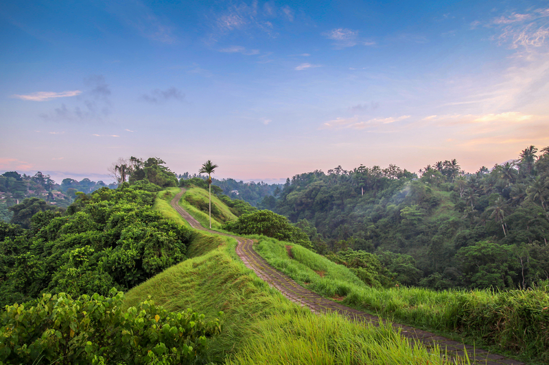

🛫 Vuelo de ida — Málaga → Bali
- Origen: Málaga (AGP)
- Destino: Denpasar - Bali (DPS)
- Fecha salida: 17 Marzo 2026
- Hora salida: 14:20
- Llegada estimada: 17 Marzo 20:20 +1
- Clase: Economy
- Escalas: 1-2 escalas
- 💰 Precio estimado ida: 400 € - 500 €
Una aventura creada con respeto por la naturaleza, los animales y la esencia salvaje de Bali.
🌿 Diseñado y creado por Borja
🤍 En honor a quienes me acompañan en esta experiencia: Manuel · Nazaret · Martina
Calculando tiempo restante...
✈️Puedes consultar todos los detalles y reservar el vuelo directamente desde Skyscanner:
✈️ Ver vuelo completo en SkyscannerVilla: Hedonia Luxury Villas
Zona cercana a Petitenget y beach clubs.


Villa: Villa Themma Jungle
Ubicación natural ideal para excursiones.


Villa: Penida Bambu Green Villas
Zona tranquila en colinas con vistas al océano.


Villa: Kayumanis Jimbaran Private Estate & Spa
Muy cerca del aeropuerto y playa.


